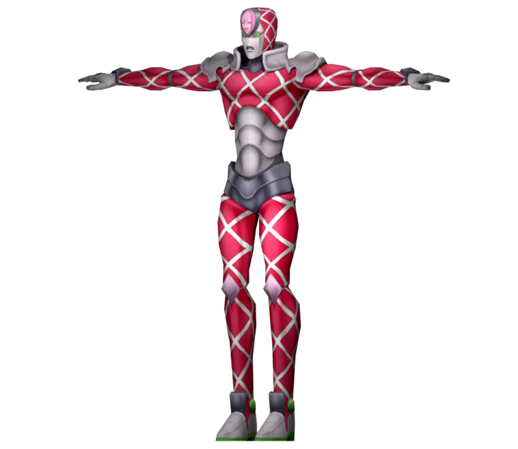

King Crimson is a powerful Stand with the ability to erase time and predict future events.
When King Crimson erases time, it creates a gap in the timeline where events that would have occurred are effectively skipped over.
This allows Diavolo to avoid attacks and manipulate situations to his advantage.
Additionally, King Crimson can predict future events, giving Diavolo insight into his opponents' actions and allowing him to plan accordingly.